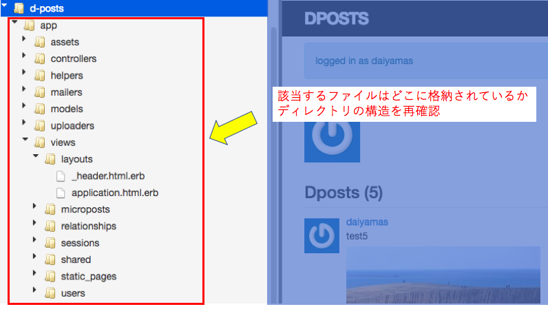

Railsでのhtml、cssの記述方法の習得が目的です。
ワークスキルのLesson6で学んだ投稿アプリは、Ruby on Railsで自動生成された ファイルを使っているため、基本的な操作方法に関して手を動かしてカタチにしてみただけにとどまっています。 レッスンの中では、cssやhtmlに関する記述と思われるソースを実際に書いていましたが、あらかじめ用意されたソースをトレースしただけにとどまっています。 今回の目的は、D-postをTwitterのPC版ページの要素を加えたイメージまでカスタマイズすることです。 具体的には、以下の3点をカスタマイズしてみたいと考えています。
- ページヘッダにキービジュアルを配置
- 左カラムはプロフィールの画像、コメントを追加
- 投稿フォームは右カラム、タイムラインの一番上に移動
画像・テキスト配置やレイアウト変更の方法は？
カスタマイズに必要となる作業のボリュームイメージはつかめていませんがスケジュールを立ててみました。 他のタスクと並行して進めることも念頭に置いているため、トータル4日間で完成させるスケジュールを 立てています。
スケジュールは復習・予習2日間、実装2日間。
テーマのデフォルトをそのまま流用したところ、フリーメールのドメインでは送信元に登録できない不具合が発生しています。 お問い合わせフォームはphpファイルで再度作り直す必要があります。
- 1日目：Lesson6の復習
- 2日目：Railsでのhtml、cssの記述方法の習得
- 3日目：ページheader部分の実装
- 4日目：ページbody部分の実装
D-POSTのページ構成、該当ファイルを洗い出してみました。
Railsでは、ルーティング、コントローラ、ビューという3つのパートがそれぞれ異なる役割で 処理を行っています。今回のカスタマイズはここで言うところの「ビュー」のパート。 d-post内のフォルダ、ファイルを探って、該当するであろうものを物色してみました。 ヘッダ部分は各ページ共通のため「_header.html.erb」を読み込ませているようです。 タイムラインとプロフィールを表示させるページは、「application.html.erb」ではないかと 思われます。
<header class="navbar navbar-fixed-top navbar-inverse">
<div class="container">
<%= link_to "Dposts", '#', id: "logo" %>
<nav>
<ul class="nav navbar-nav navbar-right">
<li><%= link_to "Home", root_path %></li>
<li><%= link_to "Help", '#' %></li>
<% if logged_in? %>
<li><%= link_to "Users",users_path %></li>
<li class="dropdown">
<a href="#" class="dropdown-toggle"data-toggle="dropdown">
Account <b class="caret"></b>
</a>
<ul class="dropdown-menu">
<li><%= link_to "Profile", current_user %></li>
<li><%= link_to "Settings", '#' %></li>
<li class="divider"></li>
<li>
<%= link_to "Log out", logout_path, method: "delete" %>
</li>
</ul>
</li>
<% else %>
<li><%= link_to "Log in", login_path %></li>
<% end %>
</ul>
</nav>
</div>
</header>
<!DOCTYPE html>
<html>
<head>
<title>DPosts</title>
<%= stylesheet_link_tag 'application', media: 'all' %>
<%= javascript_include_tag 'application' %>
<%= csrf_meta_tags %>
</head>
<body>
<%= render 'layouts/header' %>
<div class="container">
<% flash.each do |message_type, message| %> <!-- ここから -->
<div class="alert alert-<%= message_type %>"><%= message %></div>
<% end %> <!-- ここまで追加 -->
<%= yield %>
</div>
</body>
</html>
本日のミニ備忘録
本日はD-postのカスタマイズプランを記事にアウトプットするだけの作業になりました。 来週からは実装に入っていきたいと考えています。